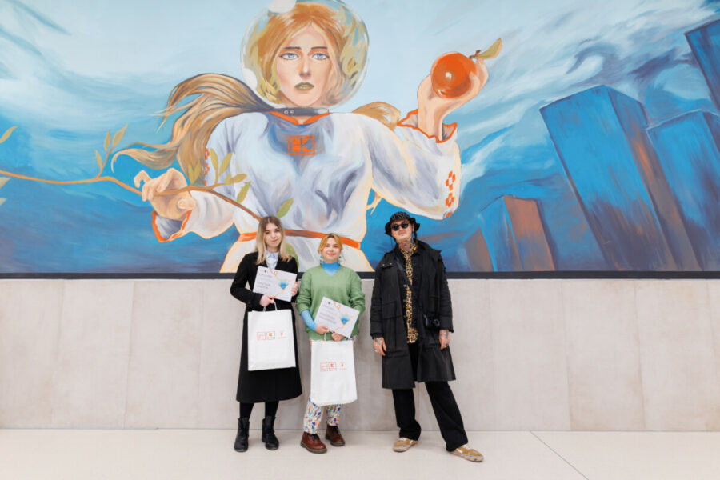
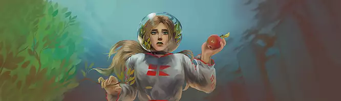

This is a project I consider very important for me, because I had pleasure working with Kaufland, drawing people's attention to environmental problems. With the help of professional mural artist Dmitri Potapov (BTA) me and other participant finished our murals on the walls of the shop. The mural is located in Moldova, Chisinau, on Kiev 7 street. This project serves to inspire buyers to adopt a more sustainable lifestyle and promote care for the environment.


"Too much has fallen on the fragile shoulders of nature: piles of waste, factories polluting the atmosphere, depletion of Natural Resources, Climate Change and other impediments that have been caused by the human factor; but she continues to love us, gives us home and generous gifts. In addition, nature is an inexhaustible source of inspiration for humans. Our duty is to bring the planet back to life and take care of nature as it takes care of us”.
This is the description of the mural I gone with. I enjoyed the process itself, it was like painting on a huge canvas, the wall was huge and felt like it was about 7 meters high, we painted on scaffolding, and it gave me an adrenaline rush. I respect graffiti and mural artists and those who paint on tall buildings, and I would definitely like to try again.
© 2026 Auroscurro. All rights reserved.